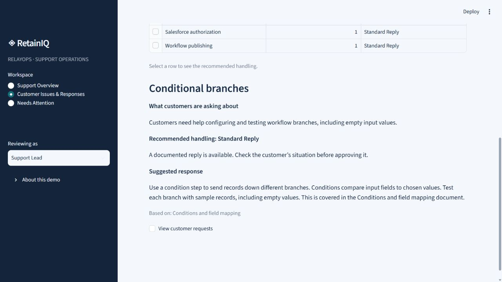

Customer Support & Capacity
RetainIQ
Growing demand, with control over service
Helps support teams understand recurring demand, prepare consistent responses using existing guidance, and keep individual decisions with employees.
Working portfolio prototype · Fictional demonstration dataThe business problem
The fictional RelayOps support team receives recurring questions as demand grows. Staff spend time reading similar messages, finding guidance, and drafting replies, alongside cases needing individual investigation. More staff can add capacity, but repetitive preparation remains. Without a clear review process, routine work and exceptions compete for attention.
My approach
The workflow separates preparation that can be reused from decisions requiring judgment. Similar issues share relevant guidance and draft responses, while employees review the customer’s circumstances and decide what to approve or escalate. Keeping approval at the individual ticket level allows shared preparation without surrendering control over customer decisions.
What I built
- Review workload and recurring issues across three simulated operating scenarios and reporting windows.
- Bring similar requests together and prepare responses using information the business already maintains.
- Keep supporting guidance visible while employees edit, reject, escalate, or approve individual tickets.
- Assign follow-ups and record resolution notes so exceptions remain visible.
How it works
- 01Review incoming requests→
- 02Group recurring issues→
- 03Find relevant guidance→
- 04Prepare response drafts→
- 05Review and follow up
Inside the application
Application preview
Actual captures from the local application. Prepared AI Demo Results replays recorded model outputs; these screens do not show fresh inference. Click a screenshot to view it at full size.



Explore the project
The hosted demo replays recorded AI outputs for matching fictional inputs. Optional local Ollama can process new inputs when running locally; changed inputs otherwise need manual review. Approval does not send a message or resolve a ticket.